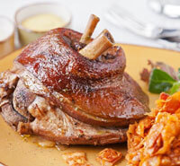

Трактир "ЗЕР ГУТ" представляет традиционную чешскую кухню и предлагает широкий выбор сытных и вкусных мясных блюд — Рулька "Швейк в полевой обедне", Ребра "Швейк на родине в Будейвицах", и конечно же, чешские колбаски, великолепно сочетающиеся Pilsner Urquell.

Pilsner Urquell - это прадед всех чешских лагеров - золотистого цвета с чистым мягким вкусом и богатым ароматом душистого хмеля. Путем создания особых условий перевозки, хранения, розлива и подачи - мы доносим до наших гостей оригинальный вкус пива, которое доставляется в Трактир "Зер Гут" напрямую из Чехии.
Все вокруг создает уникальную, уютную атмосферу Великой Австро-Венгерской империи конца 19-ого, начала 20-ого столетия. Дух заведения перенесёт Вас в старую Прагу. Вы окунетесь в атмосферу быта Йозефа Швейка, который дружески встречает при входе с вкуснейшей кружкой чешского напитка!